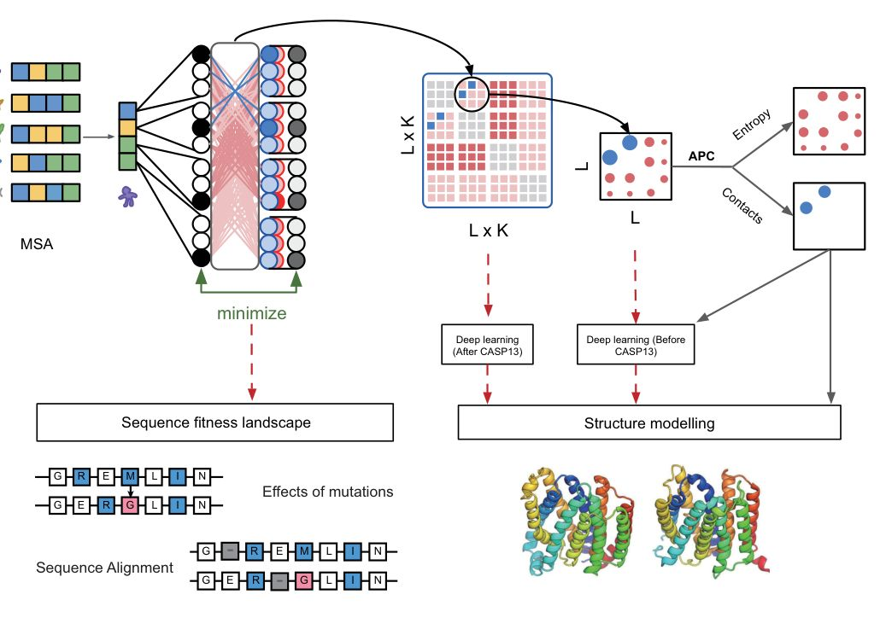
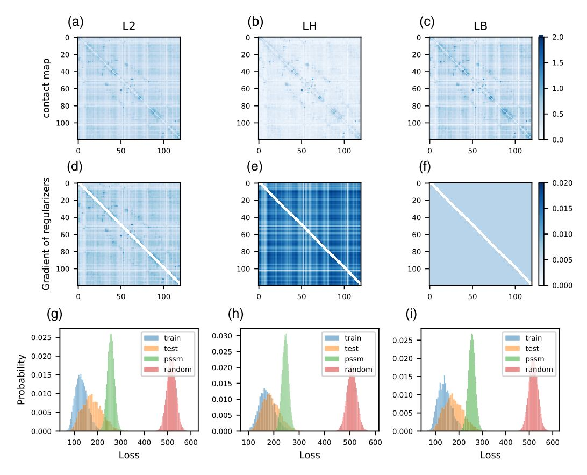
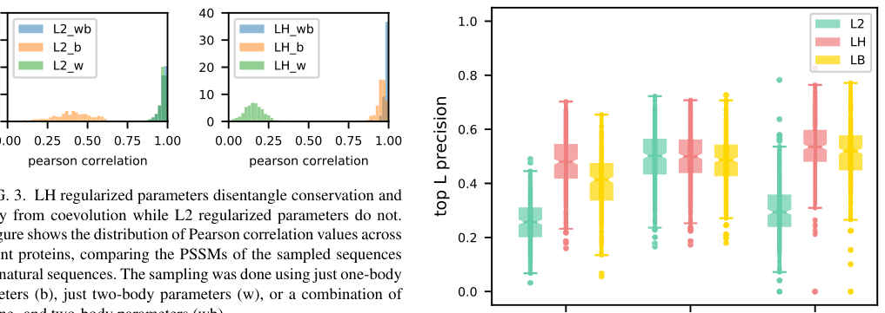
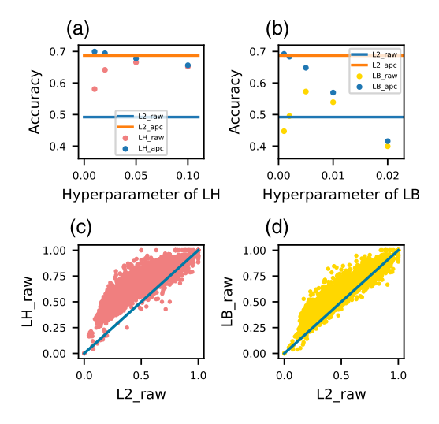
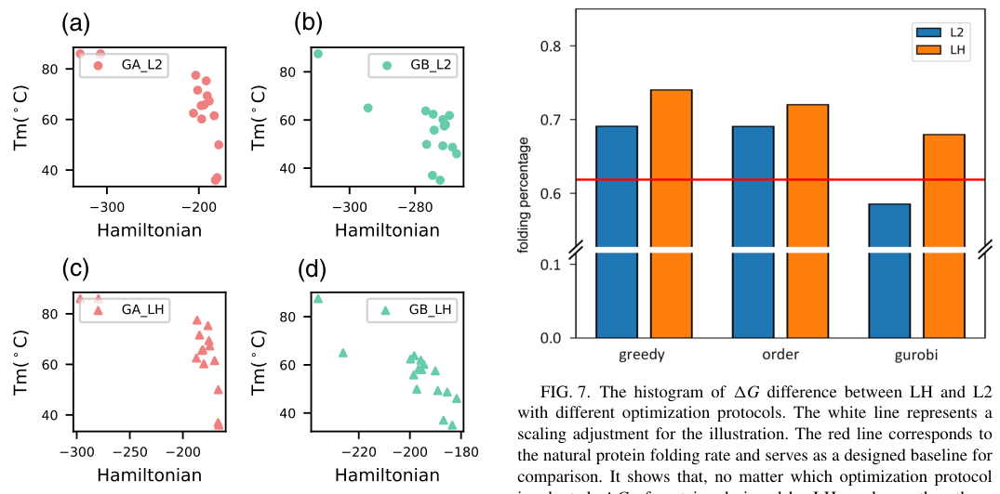
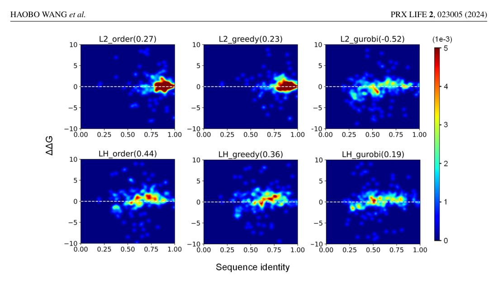
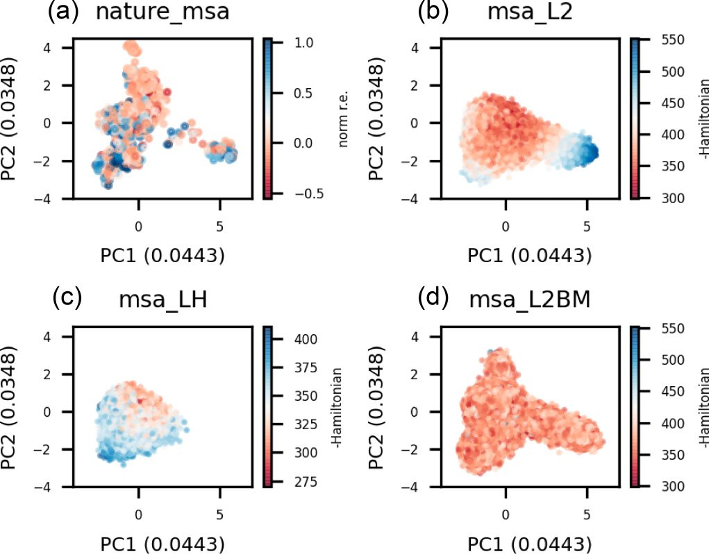
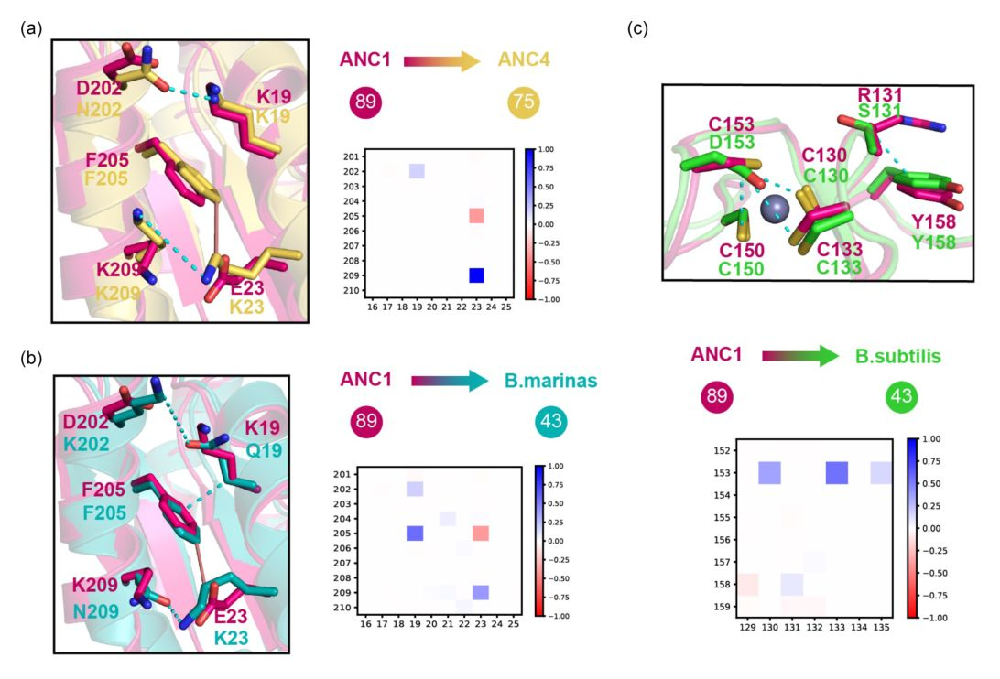
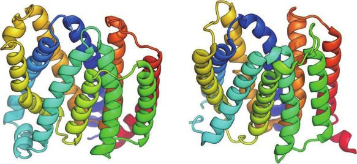

Unified Model of Protein Evolution
Disentanglement of Evolutionary Constraints in Statistical Models of Proteins
Abstract
The exponential growth of protein sequences in the post-genomic era has revolutionized the application of generative sequence models for pivotal tasks such as contact prediction, protein design, alignment, and homology search. Despite remarkable progress in these areas, the interpretability of the modeled pairwise parameters remains limited due to complexities arising from coevolution, phylogeny, and entropy. While post-correction methods for contact prediction have been developed to eliminate entropy-related contributions from predicted contact maps, there is currently no direct approach to correct entropy in other applications reliant on raw parameters. In this paper, we investigate the sources of entropy signal and propose a novel spectral regularizer, LH (an abbreviation of Henri Lebesgue), to mitigate its impact during model fitting. By incorporating this regularizer into the GREMLIN framework (utilizing a Markov random field or Potts model), we enable the accurate inference of sparse contact maps while simultaneously improving interpretability and addressing overfitting concerns critical for sequence evaluation and design. To validate the efficacy of our approach, we design multiple protein sequences based on GREMLIN with both L2 and LH regularizers, and subsequently experimentally measure their using cDNA display proteolysis. Our findings demonstrate that proteins designed using the LH regularizer exhibit increased diversity and enhanced folding stability. Published by the American Physical Society 2024
I. INTRODUCTION
Billions of years of evolution of natural selection have produced an astronomical number of diverse protein sequences. By comparing the sequences to each other, it has become possible to model the evolutionary constraints important for protein structure and function. Since it was shown that the covariance patterns observed in a multiple sequence alignment (MSA) of homologous proteins are related to structure [1], models have been developed to automate the extraction of this coevolutionary signal for protein structure prediction and design.
To investigate this issue, researchers from the fields of mathematics, physics, bioinformatics, and computer science have proposed numerous models, such as the inverse covariance matrix, the Boltzmann machine, the Potts model, or the Markov random field (MRF) to revolve around the analysis of variable correlations. In our previous reports, we unified these models within a framework for better understanding [56]. The latest class of models were designed to disentangle direct from In addressing the entropy issue, it is essential to clarify that here, entropy pertains to the single-site entropy within each column of the multiple sequence alignment (MSA). The MSA is utilized as input for the Markov random field (MRF) model, aiming to reconstruct the original sequences. The model comprises a tensor representing coevolution (L×K×L×K) and a matrix capturing conservation and positional entropy (L×K), where L is the length of the protein sequence, and K is the number of amino acids plus an aligned gap. Typically, the four-dimensional tensor is condensed into an L×L matrix, followed by the application of average product correction (APC) to disentangle contacts from the entropy signal. Traditionally, in applications like the critical assessment of structure prediction (CASP13), a prominent blind protein structure prediction experiment, the reduced L×L matrix is favored over the full four-dimensional (4D) tensor as input for deep learning. This coevolution model serves not only for structural predictions but also for predicting mutation effects and aligning sequences. However, it is crucial to note that the entropy signal (highlighted in red) is exclusively separated through the APC method at the reduced matrix level. At the 4D tensor level, the coevolution signal and entropy remain intertwined, posing potential challenges to various applications, as illustrated by the dashed red lines. This entanglement at the 4D tensor level may impact the overall performance of related applications. indirect coevolution [2]. The parameters of these models have been inferred using a plethora of methods, such as GREMLIN [3], plmDCA [4], bmDCA [5], PSICOV [6], and mfDCA [7]. This also includes the most recent low-rank reparametrizations, such as restricted Boltzmann machines or a variational autoencoder [8], and self-attention-based models that share MRF parameters across protein families [9]. The parameters from these models are used for protein structure prediction [10][11][12][13][14], protein-protein interaction prediction [15][16][17], protein design [18][19][20], mutation effect prediction [21,22], and protein sequences alignment and homology search [23][24][25][26].
The result of these models is typically two sets of parameters. One is one body, an L×K matrix modeling the conservation and entropy, where L is the length of the protein sequence and K is the number of amino acids plus an aligned gap. The other is an L×K×L×K tensor modeling the coevolution. For contact prediction, the four-dimensional coevolution tensor is reduced to an L×L matrix by taking the norm of each K×K matrix (Fig. 1), followed by a low-rank correction procedure. The matrix represents the strength of the residue-residue interactions within the protein. The lowrank signal was shown to be highly correlated with entropy [27], indicating an entanglement of entropy and coevolution signal. Methods to correct for this include average product correction (APC) [28], low-rank and sparse decomposition (LRS) [29], and balanced network deconvolution (BND) [30]. Among them, the APC is widely used to boost contact accuracy in almost all of the coevolution models. For instance, in bmDCA, a model designed to recapitulate all the pairwise frequencies observed in the natural MSA, and most recently transformer-based models designed to share parameters across models, still rely on the APC to get better contact prediction [9,31]. Though the models and loss functions are becoming more complex, they are still unable to disentangle the signal in the raw parameters of the model.

For applications besides contact prediction, the full coevolution tensor, without entropy correction, is used as input to deep learning methods such as the direct structure prediction protocol Alphafold [14], protein design [19,20], mutant ranking [21,22], sequence alignment, and remote homology detection [23][24][25][26] (Fig. 1). Given that the current correction methods, such as the APC, only work for the L×L matrix, it remains unclear whether the entropic "noise" also affects these applications. Similar to how the entropy correction on the L×L matrix improves the interpretability and the accuracy of contact prediction, we reason that a correction or regularization at the coevolution tensor level should also improve its downstream application. Understanding the biophysical meaning of the APC and how to apply the correction within the model rather than post-correction remains a fundamental question in the coevolution field.
In this paper, we extend previous findings by exploring additional correlations of the approximated low-rank signal removed by the APC. Specifically, we investigate its relationship not only with the residue's information entropy [27,28,32], as demonstrated in prior studies, but also with the dominant eigenvector of the two-dimensional (2D) contact matrix [32].
Based on these observations, we modify GREMLIN's pseudo-likelihood objective to include a spectral regularizer over the pairwise coevolution parameters. The parameters of this model are tested on both the task of contact prediction and sequence design tasks. For unsupervised contact prediction, using the norm of the coevolution tensor, the result shows that it can achieve almost the same accuracy compared with the APC. For supervised contact prediction, contact accuracy improves when the coevolution tensor is used as input to a logistic regression model. For sequence design, we find that the regularization improves model interpretability, revealing more biophysical details of each amino acid pair, potentially allowing for rational sequence design. Furthermore, we find that the resulting Hamiltonian (the entire system's energy, referred to as the Hamiltonian, encompasses the consideration of the induced local field, and others are not considered) better correlates with protein stability. Finally, we design protein sequences based on the GREMLIN model with LH (which stands for Henri Lebesgue) and L2 regularizers, respectively. Experimental data show that sequences designed by LH possess higher sequence diversity and better folding stability.
A. Markov random field
The characters of each string in the multiple sequence alignment are one-hot encoded, meaning that each character is represented as a binary vector where only one element is "hot" or set to 1, indicating the specific position of that character in the alphabet, while all other elements are set to 0. The data matrix X ∈ R N×L×K has N sequences, each sequence is of length L, and each position in the sequence can have K different types of amino acids. In the MRF model, a one-body term, B ∈ R L×K , and a two-body term, W ∈ R L×K×L×K , are used, and the Hamiltonian term is written as H nlk = B lk + L r=1 K s=1 X nrs W rslk . In addition, the pseudo-likelihood method is used to approximate the partition function of each residue,
APC is approximately equivalent to removing the first eigenmode of the L×L matrix
The contact matrix M ∈ R L×L is derived from the Frobenius norm of W,
The background signal can be written as p T p/ i p i (noted as the AP term). The corrected matrix is denoted as C, thus we have C = Mp T p/ i p i .
The Perron-Frobenius theorem [33,34] says that for a non-negative real square matrix, there exists a non-negative dominant eigenvalue. This means that for the matrix M there exists a dominant eigenvalue that can be approximated by the power iteration method. We demonstrate that the APC approximates the first eigencomponent by initializing a 1 vector (mathematical proofs can be found in the Supplemental Material [35]). Thus, the APC can also be written as where λ 1 and v 1 are the dominant eigenvalue and eigenvector of M.
C. Spectral regularization
To introduce the APC during the training process, we propose to remove the first eigenmode of the M at the gradient level. This indicates that the regularizer can be written as the integral of the first eigenmode. So during training, the first eigenmode will be down-weighted in each step,
We can approximate λ 1 by the APC since the eigenvalue is 023005-3 dominant and large in this system (details are in the Supplemental Material [35]),
A multiple sequence alignment (MSA) is a collection of evolutionary-related sequences. The relationship between positions (or columns) of the MSA is due to structure constraints, and the relationship between sequences (rows) is the phylogenetic signal. These two signals can be entangled [36,37], especially when the sample size is low. Positions with high entropy just by the change may appear to be "coevolving." This is evident by looking at the normalized p vector from the coevolution matrix M (averaged column/row). The p vector has been reported to be linearly correlated with the square root of entropy [27]. Even with this observation, it remains unclear how to disentangle them within the model.
An obvious solution is to use a sparse regularizer, such as Block L1 (LB) [3], but this was surprisingly found to result in less accurate contact prediction compared to L2 with the APC. To better understand this phenomenon, we reexamine the correlation between p and entropy for the depth of MSA for a protein family (DNA binding response regulator, PDB: 3CNB, chain: A) with at least 20 K sequences. With few sequences in MSA, the correlation between p and the square root of entropy is almost linear. When the number of sequences increases, the Pearson correlation between these two vectors starts decreasing (see Fig. S1A in the Supplemental Material [35]). To evaluate the overfitting issue, we randomly split the MSA into training sets and test tests. Then, we checked the distribution of loss in these two sets, and we quantified the overfitting in the MRF model using the Kullback-Leibler divergence (see Fig. S1B in the Supplemental Material [35]). The KL divergence shows that the model tends to be overfitting when it does not have enough sequences, consistent with previous reports [38]. We also see the fraction of variance explained by the first or dominant eigenmode of M to decrease with more sequences. Yet even at 20 000 sequences, 90% of M (see Fig. S1C in the Supplemental Material [35]) is dominated by the largest eigenmode, whose APC approximates via first power iteration (see details in the Supplemental Material [35]). The sparse structure information only explains less than 10% of M. Based on this observation, we reasoned that suppressing the first eigenmode in M can be a first step in strengthening the sparse structure information.
Inspired by the APC method, we introduce a spectral regularizer named LH (derived from Henri Lebesgue) to target the suppression of the first eigenmode in the pairwise parameters of the Markov random field (MRF) during training, particularly at the gradient level. Figure 2 provides a visualization of the gradient analysis for three distinct regularizers-L2, LH, and LB. Unlike a direct display of the gradient for the W matrix, the visualization focuses on the gradient based on the M matrix.

The analysis highlights key distinctions among the regularizers. The L2 method primarily involves matrix rescaling without a significant impact on entropy removal or sparsity promotion. LB exhibits a constant gradient across all elements. Notably, for LH, the gradient captures the P term, indicating effective suppression of entropy in the two-body term throughout the training process.
2, LH regularized parameters exhibit unique characteristics. Unlike L2 or LB regularized parameters, LH-regulated parameters no longer display the low-rank signal (manifested as vertical and horizontal lines). This absence is significant, particularly in the context of the APC's role in unsupervised contact prediction tasks. Additionally, LH regularized parameters show no signs of overfitting, as evidenced by consistent results across multiple protein families with varying depths, as depicted in Fig. S2. This consistency underscores the effectiveness of LH regularization in mitigating overfitting issues across diverse protein data sets.
To evaluate robustness, we compute the reference Hamiltonian using a protein family (DNA binding response regulator, PDB: 3CNB, chain: A) with over 20 K sequences, employing parameters from three regularization schemes. Subsequently, we subsample the MSA to different depths, refit parameters, and we calculate Spearman correlation with the recomputed Hamiltonian. In Figs. S3 and S4, LH regularization exhibits a more robust correlation with the reference Hamiltonian compared to L2 and LB. The latter two show a rapid decline in correlation with reduced sequences, indicating a more pronounced overfitting issue. This highlights the superior robustness of LH regularization across varying data-set sizes.
Furthermore, to demonstrate the disentanglement of coevolution and entropy (as measured by conservation), we use the parameters of the L2 and LH models to sample new sequences. Specifically, we sample sequences based on onebody parameters, two-body parameters, or a combination of both. If disentangled properly, the sampling procedure should require both terms for the PSSM (position-specific scoring matrix) of the sampled sequences to match the PSSM of the natural sequences. To test this, we sample sequences for a set of 553 proteins using CCMGEN [27] (see the Methods section). As shown in Fig. 3, when using both one-body and two-body parameters (wb), the PSSMs of both LH and LB regularized models match. When using just the two-body parameter (w) for sampling, the PSSMs match for L2 but not for LH. The opposite is observed when using just the one-body term (b) for sampling, i.e., the PSSMs do not match for L2, indicating the entanglement of the entropy and coevolution signal in the two-body parameters, with the one-body term playing little role. For LH regularized models, the best correlation is achieved when both the one-and two-body parameters are used, indicating the disentanglement of coevolution and entropy.

Guided by these results, we tested this method with more protein-related applications, such as contact prediction and sequence design, to see if disentangling entropy inherently helps enhance their performances.
D. Unsupervised and supervised contact prediction
As illustrated in Fig. 4(a), an increase in the weight of LH regularization results in the convergence of performance

The effects of regularization type (L2, LH, and LB) on the sparsity of contact maps, gradient, and overfitting. The first row [(a)-(c)] shows the M, with L2, LH, and LB regularization, respectively. The second row [(d)-(f)] shows the gradient of these three regularizers. Gradients are consistently recorded throughout the entirety of the training process, and the depicted gradients correspond to those obtained from the final training step as it approaches convergence. The third row [(g)-(i)] shows the distributions of reconstruction losses for the natural MSA training set (blue), the test set (yellow), MSA sampled from a PSSM of the natural MSA (green), and MSA sampled from a random distribution MSA (red). Even though the loss distribution of the training set is well separated from the PSSM and randomly sampled sequences, for the L2 and LB regularized models the test set distribution does not overlap with the training set loss, indicating an overfitting issue. For the LH regularized model, the training and test set loss distributions have a good overlap.
between the "raw" and "APC" matrices, approaching the precision of the L2 regularized "APC" matrix. Notably, with lower regularization weight, the "APC" matrix of the LH regularized model surpasses the original Markov random field (MRF) model with L2 regularization in contact precision. Figure 4(c) demonstrates LH outperforming L2 without the APC. As a point of comparison, Block L1 (LB) is explored, and while increased weight enhances "raw" performance, it falls short of matching the performance of L2 with "APC." Although both LH and LB regularizers enhance performance over L2 when considering "raw" matrices [Figs. 4(b) and 4(d)], only the LH "raw" matrix approaches that of the L2 "APC." In summary, the LH regularizer eliminates the need for APC while maintaining the contact precision of the MRF model.
For the contact prediction task, the assessment of contact precision involves a data set comprising 383 proteins (refer to methods). Two distinct matrices are under evaluation: the Frobenius norm of W, referred to as the "raw" matrix, and the average product corrected matrix denoted as "APC" following Eq. ( 3). As illustrated in Fig. 4(a), an increase in the weight of LH regularization results in the convergence of performance between the "raw" and "APC" matrices, approaching the precision of the L2 regularized "APC" matrix. Notably, with lower regularization weight, the "APC" matrix of the LH regularized model surpasses the original MRF model with L2 regularization in contact precision. (a) (b) (c) (d) regularizer eliminates the need for the APC while maintaining the contact precision of the MRF model.
Given that all residue-residue interactions within a protein adhere to the same fundamental physical potentials, it is anticipated that pairs of interacting residues share a finite number of K×K matrices. To assess the efficacy of LH regularized parameters in capturing these shared features, we employ principal component analysis (PCA) on the W matrix. PCA, being a decomposition method, allows for the distillation of crucial common or shared features. In our approach, we transpose the W matrix, treating the K×K dimension as features and L×L as the number of samples. The K×K dimension, which encapsulates the biophysical meaning of amino acid interactions, is expected to be unveiled through principal components. Figure S5 illustrates that the LH regularizer necessitates fewer principal components to explain the same amount of data compared to L2 and LB regularizers. Given that contemporary machine learning models commonly utilize the W matrix as input for predicting protein contact maps or distance matrices in future structure prediction tasks [12][13][14], we posit that the distilled features may prove more valuable as inputs to machine learning algorithms. To test this hypothesis, we trained a simple logistic regression neural network (referred to as "NN"), akin to the one described in [9], to learn a weighted sum of the K×K matrix for contact prediction. This exploration aims to evaluate the LH regularizer's effectiveness in generating features conducive to enhancing supervised machine learning methods for protein contact prediction.
We assess the performance of nine methods and present the precision for the top L contacts in Fig. 5. Contact definition employs ConFind [39] with a contact degree cutoff of 0.01 and a sequence separation of 6 or greater. The nine methods encompass pairwise combinations of regularizers (L2, LH, FIG. 6. Reanalysis of Spearman correlation between the Hamiltonian of GA/GB and published folding temperature [19]. The L2 and LH regularizers are applied to curve the Hamiltonian. The x-axis is the Hamiltonian, and the y-axis is the reported Tm. Each point is a designed protein sequence. and LB) and three postprocessing methods (raw, APC, and NN). The results reveal that LH-based inputs exhibit greater robustness and higher precision, indicating the effectiveness of denoised or distilled features. Based on these findings, we anticipate that features extracted within the context of LH regularization will enhance results in more advanced deep neural networks.

E. Sequence design
Evolution-inspired sequence design is already implemented in some generative models such as the Markov random field model [19], bmDCA [20], or the energy mixture model [40]. These models allow the calculation of the Hamiltonian as statistical energy (as described in the Methods section; see Markov random field) describing the protein thermal stability or fitness landscape. Using Monte Carlo to search sequence space and get the lower Hamiltonian is a current strategy to design sequences. Unfortunately, in these models, coevolution, entropy, and phylogeny signals are entangled under the L2 regularizer. Since protein stability is thought to be due to structural constraints, we hypothesize that a sparse model that only models the coevolution signal may be more predictive of protein stability.
To test if sparse models are more predictive of stability, we explored the stability of a series of reported designed sequence variants with labeled experimental data. We evaluated the performance using Spearman's rank correlation coefficient ρ between Hamiltonian and the melting temperature (denoted as "Tm"). As shown in Fig. 6, we can see for the GA and GB binding domains of streptococcal protein G that the Hamil-FIG. 7. The histogram of G difference between LH and L2 with different optimization protocols. The white line represents a scaling adjustment for the illustration. The red line corresponds to the natural protein folding rate and serves as a designed baseline for comparison. It shows that, no matter which optimization protocol is adopted, G of proteins designed by LH are larger than those designed by L2, in most of the cases.
tonian from the sparse LH model is well correlated with the Tm. In Protein GA, the LH achieved a performance of 0.76, slightly better than the L2 model of 0.73. In Protein GB, the LH has a stable performance of 0.86, but the L2 drops down to 0.47. These two analyses demonstrated that the LH-based method might help design more stable proteins.
Then, cDNA display proteolysis, as outlined in the work by Tsuboyama et al. [41], is employed to assess folding stability by subjecting the redesigned proteins to challenges with chymotrypsin and trypsin. The rationale behind this method lies in the principle that more stable proteins exhibit greater resistance to proteolysis. During the enzymatic proteolysis, stable proteins resist unfolding and remain intact, while less stable proteins are more susceptible to enzymatic cleavage.
Subsequently, the remaining protein fragments with cDNA signals can be detected through next-generation sequencing (NGS). The detection of cDNA signals indicates the persistence of intact protein fragments post-proteolysis. This approach allows for the identification and quantification of proteins that withstand the proteolytic challenges, providing a direct measure of folding stability. The derived G values, based on the extent of proteolysis and subsequent signal detection, serve as quantitative indicators of the relative stability of proteins designed using L2 and LH models.
For all 259 proteins, we computed the G difference between LH and L2, presenting the results in the histogram depicted in Fig. 7. The white line serves as a reference for no difference in G. The histogram reveals that, in the majority of cases, the G's of proteins designed using the LH model are higher than those designed with the L2 model. This observation demonstrates that proteins designed based on the LH model exhibit greater stability compared to those designed using the L2 model. PRX LIFE 2, 023005 (2024) FIG. 8. The association between G and sequence identity is examined across proteins designed using various models and optimization protocols. The analysis reveals that proteins designed with the LH model exhibit greater sequence diversity and stability compared to those designed with the L2 model. Instances where G values surpass the dashed lines signify that the designed proteins are more stable than naturally occurring proteins.

Furthermore, we calculated the G difference between the designed sequence and the wild-type sequence ( G) for each protein. The distribution of sequence identity and G for the designed proteins is illustrated in Fig. 8. The LH model yields more diverse sequences when employing order and greedy optimization protocols. Even with the application of the more intricate Gurobi protocol, both LH and L2 models achieve diverse sequences. However, sequences designed by the LH model exhibit higher stability. These findings underscore the effectiveness of the LH model in producing diverse yet stable protein sequences under different optimization protocols.
F. The effects of spectral regularization on phylogenetics
Beyond the entropy signal, there is also the phylogenetic signal, which is thought to be entangled in the coevolution matrix. When the MSA is projected onto the residue space, the expectation is for sequence clusters to emerge. This structure aligns more closely with phylogenetic principles, giving rise to the formation of subfamilies.
To test this, we use the chorismate mutases data set from [20] to fit three generative models and sample new sequences. Unless the sequences are explicitly sampled along a phylogeny [27], we would expect independently sampled sequences to be devoid of low-rank signals representing relationships or clusters of sequences. Sequences sampled from L2 regularized models bmDCA and GREMLIN fully and partially preserve, respectively, the low-rank structure when projected onto the two largest principal components of the natural MSA. For LH sampled sequences, the signal is gone, indicating that the phylogenetic bias is now suppressed as shown in Fig. 9. Though this is theoretically a good result, it can be problematic for sampling of functional sequences if the low-rank signal represents functional clusters as expected for an MSA that is a mixture of paralogs and orthologs. The low-rank signal may be useful for discriminating between functional and nonfunctional sequences if different clusters PRX LIFE 2, 023005 (2024) FIG. 10. Structural reanalysis [42] of thermal stability from (a) ANC1 to ANC4, (b) ANC1 to B. marinas, and (c) ANC1 to B. subtilis using published crystal structures [42,44,45]. The right panel showed the difference in the coevolutionary coupling strength of two different proteins. The more unstable the right pairwise interaction is, the more blue the pattern appears. The solid red lines represent high thermal stability, and the dashed-dotted line weakened the interactions for the right protein.


represent different functions. To test that the LH regularized model is still able to discriminate between working and not working designs, we retrain the models using a subset of natural sequences experimentally determined to have the desired activity (denoted as "norm r.e."). As shown in Fig. 9, for all three models, we find that the designed sequences from [20] can be easily separated into working and nonworking by their computed Hamiltonian. To confirm that the sparse coevolution signal is present, we compute the mutual information (MI) contact maps of the L2, LH, and bmDCA (denoted "L2BM") sampled sequences. Analyzing the contact maps qualitatively, we see low-rank signals (vertical and horizontal lines) in the MI matrix for L2 and bmDCA sampled sequences, yet a little signal in the LH sampled sequences. To confirm that the entropy signal is preserved, we compared the marginal entropy of the sampled sequences to those of the natural MSA, and we saw a strong correlation (Pearson r = 0.95), suggesting the entropy is still captured by the LH regularized model but disentangled from the pairwise term.
These findings propose a promising direction for advancing a unified model capable of incorporating both coevolutionary and phylogenetic influences. LH could prove valuable in unraveling the covariance arising from phylogeny as opposed to coevolution within a model that effectively parametrizes these two signals.
G. Interpretability
LH enhances the interpretability of single sequence contacts within coevolutionary models. While MRF models' parameters for a given sequence are anticipated to reflect the physical potentials of interacting residues, an examination of L2 or LB regularized parameters for the same sequence reveals patterns of indirect correlations manifested as vertical and horizontal lines. For LH regularized parameters, the signal is sparse (Fig. S7), and it reveals attractive or repulsive interactions, unlike the L2 norm used to represent the average signal across a protein family. As a case study, we analyze adenylate kinase [42]. From Fig. 10 we can see that ANC1 is the most ancient sequence and has a melting temperature of 89 • C, with ANC4 only 75 • C. From the detailed single sequence contact analysis, we see that ANC4 forms two strong negative or repulsive contacts compared to ANC1. The residue pairs between 23 and 209 are changed to a repulsive lysine(K)-lysine(K) interaction in ANC4, while they are a stable lysine(K)-glutamic acid(E) salt bridge in ANC1.
023005-9
10, it can be observed that for the residue pair 19 and 202, the salt bridge is disrupted by replacing aspartic acid (D) with asparagine (N). Additionally, from AN1 to B. marinas, apart from breaking the 19-202 salt bridge, a πcation interaction between phenylalanine (F) and lysine (K) is disrupted by mutating a neighboring interaction of F with glutamine (Q). This mutation decreases the interactive energy and weakens the stability of Adk from B. marinas. From ANC1 to B. subtilis, besides breaking the cation interaction of R-Y to R-S, the well-structured zinc-binding sites Cysteine(C)CCC are mutated to CCCD, which not only shows a series of negative signals in the metal-binding region, but also might have an important effect to decrease the stability. This effect has not been reported in the published paper [42], and the zinc-binding sites were reported to be highly correlated with stability recently [43].
This qualitative analysis demonstrates the power of LH regularization in increasing the interpretability of the coevolution of interacting residues, and it may help biologists to rationally analyze the effects of mutation for sequence design.
III. DISCUSSION
Motivated by a mathematical reinterpretation of the average product correction (APC), we have introduced a spectral regularizer in our study. This regularizer penalizes the largest eigenmode of the pairwise parameters in the Markov random field (MRF) during the training process. Our findings indicate that this approach greatly diminishes the necessity for low-rank post-correction. Specifically, in the context of unsupervised contact prediction, we have observed that the extracted contact map no longer necessitates the use of the APC. Furthermore, the performance achieved by our method closely matches that of L2 regularized models with the APC.
In our proposed LH model, the enforcement of a pseudo-likelihood (or self-supervised objective) is achieved by altering the diagonal elements of the M matrix to zero. This constraint ensures that the sum of eigenvalues equals the sum of diagonals, which results in a sum of zero. However, suppressing the largest eigenvalues may inadvertently distort the remaining eigenvalues. This distortion, in the case of APC, removes only the largest eigen-mode while leaving the rest unaffected. This may explain why some degree of overfitting persists, preventing our model's performance from surpassing that of L2 regularized models with APC.
Further refinements are crucial to effectively confine the regularization to only impact the largest eigenmode. By concentrating the regularization on this specific aspect, we anticipate addressing the current limitations and enhancing the overall performance of our approach. Moreover, we have observed that these parameters are less prone to overfitting in sequence reconstruction tasks, indicating their potential to generalize well in unknown spaces.
In particular, the LH-based W matrix proves to be a more suitable input for supervised learning, possibly benefiting the prediction of protein contacts in more complex supervised models. Additionally, we have successfully applied the LH-based MRF model to analyze designed sequences across various examples, all of which exhibit significant correlations between experimental stability/fitness data and the Hamiltonian derived from our method. Furthermore, our approach uncovers previously unseen evolutionary patterns and greatly enhances the interpretability of the model. Considering the aforementioned factors, the LH-based model, guided by structural principles, holds great potential for further exploration in structural-related applications.
The exclusion of entropy and the low-rank signal associated with phylogeny from the two-body term facilitates the utilization of shared parameters and explicit modeling of phylogenetics. We hypothesize that the two-body term can be effectively described by a limited set of 20 by 20 matrices that capture biophysical characteristics, and these matrices can be shared across protein families. Previous attempts to improve contact prediction by sharing parameters across protein families [31] or explicitly modeling phylogeny on real data [46,47] have encountered challenges due to entanglement. With the introduction of LH regularization, it may be valuable to reexamine these problems and approaches in order to garner new insights.
Recent deep-learning methods like VAEs [48,49], BERT [50,51], MSA transformer [52], RoseTTAFold [53], and Al-phaFold2 [54], while not explicitly parametrizing MRFs, are thought to learn them via the hidden parameters. These models optimize an approximation of the pseudo-likelihood function called self-supervision or masked-language-modeling [31]. We suspect that the Jacobian of these models can be computed [8] and regularized with LH to promote sparsity in the hidden representations.
A. Data set
A data set of proteins from the PDB database, along with their multiple sequence alignment (MSA) were collected from Ref. [55]. This study utilized three data sets from the Protein Data Bank: an x-ray set of 9846 nonredundant protein chains, a varied-resolution x-ray set, and a solution NMR set containing 222 proteins with both NMR and crystallographic structures. To make the data set consistent, a diverse subset of 383 proteins was selected that contained at least 1 K sequences and subsampled to 1 K sequences, as described in [56].
For the DNA-binding response regulator protein (PDB code: 3CNB), a data set comprising 25,947 sequences was randomly split into an 80:20 ratio, with 80% used as the training set and 20% as the test set.
For protein design, the data set includes protein thermal stability data from GA and GB binding domains of streptococcal protein G [19] and the fitness measurements of chorismate mutases [20] and the Adenylate kinase sequences [42]. The latter sequences were generated using an ancient sequence reconstruction approach.
The cDNA display-designed proteins were chosen based on DNA synthesis limitations, restricting their length between 20 and 80 proteins. MSA with a depth of over 100 sequences against the BFD data set was conducted. Additionally, proteins containing cysteine were systematically excluded from the selection. A total of 259 proteins successfully entered the final analysis.
For the disentanglement of entropy and coevolution experiment, 553 short proteins with at least 100 sequences in the MSA were collected from the PDB database. Considering the sampling efficiency of CCMGEN, the data set was restricted to a maximum length of 80 amino acids. For the 553 proteins, we ran TrRosetta's HHblits protocol to generate the multiple sequence alignment. To summarize, the protocol starts with a search against the Uniclust30 sequence database. If fewer than 128 sequences are found at an evalue of 1×10 -3 , the MSA is further enriched using the BFD database. Once the parameters are fit using GREMLIN, CCM-GEN (starting with a random sequence with a burn-in of 1000) is used to sample 2000 new sequences. The data sets are in Ref. [57].
B. Regularization and hyperparameter
L2 and Block L1(LB) regularizers can be presented as follows:
In the previous GREMLIN study, the hyperparameter of LH was identified as a function correlated with three factors: the number of states, the inverse of the square root of effective sequences, and the length of the protein. Subsequently, it was determined that the tunable hyperparameter was set at 0.1 in this work, and it is more appropriately adjusted to a range between 0.05 and 1 for optimal performance.
C. Supervised learning
To convert the two-body term in the MRF model into the two-dimensional contact map, we make use of three conversion methods, which are denoted as “raw,” “APC,” and “LR.” The “raw” is M from Eq. ( 2 ), and “APC” is C from Eq. ( 3 ). The “LR” is the output following logistic regression fitting described in Ref. [ 9 ]. We train the logistic regression on the curated data set [ 56 ] using fivefold cross-validation, which contains 383 proteins. The data set is first split into five equal parts. Five separate models were trained, and for each model, [1] C. Yanofsky, V. Horn, and D. Thorpe, Protein structure relationships revealed by mutational analysis, Science 146 , 1593 (1964) . [2] A. S. Lapedes, B. G. Giraud, L. Liu, and G. D. Stormo, Correlated mutations in models of protein sequences: Phylogenetic 1 / 5th of the data was selected as the test set and the remaining as the training set. In this way, the logistic regression model can be trained and evaluated on all 383 proteins. The logistic regression model is L2 regularized with a coefficient of 1 × 10 − 5 . The learning rate is set to 5 × 10 − 3 and the Adam optimizer [ 58 ] is employed to optimize the loss function.
The performance of nine methods (pairwise combination of three regularization methods: L2, LH, and LB and three contact extract methods: raw, APC, and LR) is evaluated on the 383 proteins with contact precision of the top L predictions, Fig. 5.
D. Sequence design
To design protein sequences based on LH and L2 models, we propose three optimization protocols, i.e., order, greedy, and Gurobi. Order means that starting from the wild protein sequence, each position is mutated to the amino acid with the lowest Hamiltonian, from left to right. Greedy is similar to order, except that the mutation order is determined by the probability, i.e., the softmax(H) term in Eq. ( 1). Specifically, for all the unmutated positions, we choose the one with the highest probability. After the mutation, H is recalculated. To further explore the sequence design space, we employ Gurobi, the state-of-the-art solver for mathematical programming, to make the optimization. Gurobi is asked to minimize the Hamiltonian of the designed sequence while keeping the sequence in one-hot format.
Ovchinnikov, Unified framework for modeling multivariate distributions in biological sequences, arXiv:1906.02598 (2019). [57] https://github.com/sokrypton/GREMLIN_LH [58] D. P. Kingma and J. Ba, Adam: A method for stochastic optimization, arXiv:1412.6980 .

References
- Yanofsky C, Horn V, Thorpe D. Protein structure relationships revealed by mutational analysis. Science 1964. doi:10.1126/science.146.3651.1593
- Lapedes A, Giraud B, Liu L, Stormo G. Correlated mutations in models of protein sequences: Phylogenetic and structural effects. 1999
- Balakrishnan S, Kamisetty H, Carbonell J, Lee S, Langmead C. Learning generative models for protein fold families. Proteins: Struct. Funct. Bioinform 2011. doi:10.1002/prot.22934
- Ekeberg M, Lövkvist C, Lan Y, Weigt M, Aurell E. Improved contact prediction in proteins: Using pseudolikelihoods to infer potts models. Phys. Rev. E 2013. doi:10.1103/PhysRevE.87.012707
- Figliuzzi M, Barrat-Charlaix P, Weigt M. How pairwise coevolutionary models capture the collective residue variability in proteins?. Mol. Biol. Evol 2018. doi:10.1093/molbev/msy007
- Jones D, Buchan D, Cozzetto D, Pontil M. PSI-COV: Precise structural contact prediction using sparse inverse covariance estimation on large multiple sequence alignments. Bioinformatics 2012. doi:10.1093/bioinformatics/btr638
- Morcos F, Pagnani A, Lunt B, Bertolino A, Marks D, Sander C, Zecchina R, Onuchic J et al. Direct-coupling analysis of residue coevolution captures native contacts across many protein families. Proc. Natl. Acad. Sci. USA 2011. doi:10.1073/pnas.1111471108
- Marshall D, Wang H, Stiffler M, Dauparas J, Koo P, Ovchinnikov S. The structure-fitness landscape of pairwise relations in generative sequence models. bioRxiv 2020
- Rao R, Meier J, Sercu T, Ovchinnikov S, Rives A. Transformer protein language models are unsupervised structure learners. 2012
- Wang S, Sun S, Li Z, Zhang R, Xu J. Accurate de novo prediction of protein contact map by ultra-deep learning model. PLoS. Comput. Biol 2017. doi:10.1371/journal.pcbi.1005324
- Ovchinnikov S, Park H, Varghese N, Huang P, Pavlopoulos G, Kim D, Kamisetty H, Kyrpides N et al. Protein structure determination using metagenome sequence data. Science 2017. doi:10.1126/science.aah4043
- Xu J. Distance-based protein folding powered by deep learning. 2019. doi:10.1073/pnas.1821309116
- Yang J, Anishchenko I, Park H, Peng Z, Ovchinnikov S, Baker D. Improved protein structure prediction using predicted interresidue orientations. Proc. Natl. Acad. Sci. USA 2020. doi:10.1073/pnas.1914677117
- Senior A, Evans R, Jumper J, Kirkpatrick J, Sifre L, Green T, Qin C, Žídek A et al. Improved protein structure prediction using potentials from deep learning. Nature 2020. doi:10.1038/s41586-019-1923-7
- Weigt M, White R, Szurmant H, Hoch J, Hwa T. Identification of direct residue contacts in protein-protein interaction by message passing. Proc. Natl. Acad. Sci. USA 2009. doi:10.1073/pnas.0805923106
- Ovchinnikov S, Kamisetty H, Baker D. Robust and accurate prediction of residue-residue interactions across protein interfaces using evolutionary information. Elife 2014. doi:10.7554/eLife.02030
- Cong Q, Anishchenko I, Ovchinnikov S, Baker D. Protein interaction networks revealed by proteome coevolution. Science 2019. doi:10.1126/science.aaw6718
- Ma Y, Zhou Y, Ovchinnikov S, Greisen P, Huang S, Shang Y. New insights into substrate folding preference of plant oscs. Sci. Bull 2016. doi:10.1007/s11434-016-1103-1
- Tian P, Louis J, Baber J, Aniana A, Best R. Co-evolutionary fitness landscapes for sequence design. Angew. Chem. Int. Ed 2018. doi:10.1002/anie.201713220
- Russ W, Figliuzzi M, Stocker C, Barrat-Charlaix P, Socolich M, Kast P, Hilvert D, Monasson R et al. An evolution-based model for designing chorismate mutase enzymes. Science 2020. doi:10.1126/science.aba3304
- Figliuzzi M, Jacquier H, Schug A, Tenaillon O, Weigt M. Coevolutionary landscape inference and the contextdependence of mutations in beta-lactamase tem-1. Mol. Biol. Evol 2016. doi:10.1093/molbev/msv211
- Hopf T, Ingraham J, Poelwijk F, Schärfe C, Springer M, Sander C, Marks D. Mutation effects predicted from sequence co-variation. Nat. Biotechnol 2017. doi:10.1038/nbt.3769
- Dickson R, Gloor G. Protein sequence alignment analysis by local covariation: Coevolution statistics detect benchmark alignment errors. PLoS ONE 2012. doi:10.1371/journal.pone.0037645
- Kinjo A. A unified statistical model of protein multiple sequence alignment integrating direct coupling and insertions. Biophys. Physicobiol 2016. doi:10.2142/biophysico.13.045
- Wilburn G, Eddy S. Remote homology search with hidden potts models. PLOS Computat. Biol 2020. doi:10.1371/journal.pcbi.1008085
- Muntoni A, Pagnani A, Weigt M, Zamponi F. Aligning biological sequences by exploiting residue conservation and coevolution. Phys. Rev. E 2020. doi:10.1103/PhysRevE.102.062409
- Vorberg S, Seemayer S, Söding J. Synthetic protein alignments by ccmgen quantify noise in residue-residue contact prediction. PLoS Computat. Biol 2018. doi:10.1371/journal.pcbi.1006526
- Dunn S, Wahl L, Gloor G. Mutual information without the influence of phylogeny or entropy dramatically improves residue contact prediction. Bioinformatics 2008. doi:10.1093/bioinformatics/btm604
- Zhang H, Gao Y, Deng M, Wang C, Zhu J, Li S, Zheng W, Bu D. Improving residue-residue contact prediction via low-rank and sparse decomposition of residue correlation matrix. Biochem. Biophys. Res. Commun 2016. doi:10.1016/j.bbrc.2016.01.188
- Sun H, Huang Y, Wang X, Zhang Y, Shen H. Improving accuracy of protein contact prediction using balanced network deconvolution. Proteins: Struct. Funct. Bioinformat 2015. doi:10.1002/prot.24744
- Bhattacharya N, Thomas N, Rao R, Dauparas J, Koo P, Baker D, Song Y, Ovchinnikov S. Interpreting potts and transformer protein models through the lens of simplified attention. Pacific Symposium on Bio-Computing 2021
- Zhang H, Gao Y, Deng M, Zheng W, Bu D. A survey on algorithms for protein contact prediction. J. Comput. Res. Develop 2017
- Perron O. Zur theorie der matrices. Math. Ann 1907. doi:10.1007/BF01449896
- Frobenius G, Frobenius F, Frobenius F, Frobenius F, Mathematician G. Über matrizen aus nicht negativen elementen. Phys. Math. kl 1912
- . doi:10.1103/PRXLife.2.023005
- Horta E, Lage A, Weigt M, Barrat-Charlaix P. Global multivariate model learning from hierarchically correlated data. J. Stat. Mech 2021. doi:10.1088/1742-5468/ac06c2
- Qin C, Colwell L. Power law tails in phylogenetic systems. Proc. Natl. Acad. Sci. USA 2018. doi:10.1073/pnas.1711913115
- Haldane A, Levy R. Influence of multiple-sequencealignment depth on potts statistical models of protein covariation. Phys. Rev. E 2019. doi:10.1103/PhysRevE.99.032405
- Holland J, Pan Q, Grigoryan G. Contact prediction is hardest for the most informative contacts, but improves with the incorporation of contact potentials. PloS ONE 2018. doi:10.1371/journal.pone.0199585
- Schmitz S, Ertelt M, Merkl R, Meiler J. Rosetta design with co-evolutionary information retains protein function. PLoS Comput. Biol 2021. doi:10.1371/journal.pcbi.1008568
- Tsuboyama K, Dauparas J, Chen J, Laine E, Mohseni Y, Behbahani J, Weinstein N, Mangan S et al. Mega-scale experimental analysis of protein folding stability in biology and design. Nature 2023. doi:10.1038/s41586-023-06328-6
- Nguyen V, Wilson C, Hoemberger M, Stiller J, Agafonov R, Kutter S, English J, Theobald D et al. Evolutionary drivers of thermoadaptation in enzyme catalysis. Science 2017. doi:10.1126/science.aah3717
- Pinney M, Mokhtari D, Akiva E, Yabukarski F, Sanchez D, Liang R, Doukov T, Martinez T et al. Parallel molecular mechanisms for enzyme temperature adaptation. Science 2021. doi:10.1126/science.aay2784
- Bae E, Phillips G. Structures and analysis of highly homologous psychrophilic, mesophilic, and thermophilic adenylate kinases. J. Biol. Chem 2004. doi:10.1074/jbc.M401865200
- Davlieva M, Shamoo Y. Structure and biochemical characterization of an adenylate kinase originating from the psychrophilic organism marinibacillus marinus. Acta. Cryst. F 2009. doi:10.1107/S1744309109024348
- Horta E, Barrat-Charlaix P, Weigt M. Toward inferring potts models for phylogenetically correlated sequence data. Entropy 2019. doi:10.3390/e21111090
- Hockenberry A, Wilke C. Phylogenetic weighting does little to improve the accuracy of evolutionary coupling analyses. Entropy 2019. doi:10.3390/e21101000
- Riesselman A, Ingraham J, Marks D. Deep generative models of genetic variation capture the effects of mutations. Nat. Methods 2018. doi:10.1038/s41592-018-0138-4
- Sinai S, Kelsic E, Church G, Nowak M
- Rives A, Meier J, Sercu T, Goyal S, Lin Z, Liu J, Guo D, Ott M et al. Biological structure and function emerge from scaling unsupervised learning to 250 million protein sequences. Proc. Natl. Acad. Sci. USA 2021. doi:10.1073/pnas.2016239118
- Elnaggar A, Heinzinger M, Dallago C, Rihawi G, Wang Y, Jones L, Gibbs T, Feher T et al. ProtTrans: towards cracking the language of life's code through self-supervised deep learning and high performance computing. IEEE Trans. Pattern Anal. Mach. Intell 2021. doi:10.1109/TPAMI.2021.3095381
- Rao R, Liu J, Verkuil R, Meier J, Canny J, Abbeel P, Sercu T, Rives A et al. 2021
- Baek M, Dimaio F, Anishchenko I, Dauparas J, Ovchinnikov S, Lee G, Wang J, Cong Q et al. Accurate prediction of protein structures and interactions using a three-track neural network. Science 2021. doi:10.1126/science.abj8754
- Jumper J, Evans R, Pritzel A, Green T, Figurnov M, Ronneberger O, Tunyasuvunakool K, Bates R et al. Highly accurate protein structure prediction with alphafold. Nature 2021. doi:10.1038/s41586-021-03819-2
- Anishchenko I, Ovchinnikov S, Kamisetty H, Baker D. Origins of coevolution between residues distant in protein 3d structures. Proc. Natl. Acad. Sci. USA 2017. doi:10.1073/pnas.1702664114
- Dauparas J, Wang H, Swartz A, Koo P, Nitzan M, Ovchinnikov S. 2019